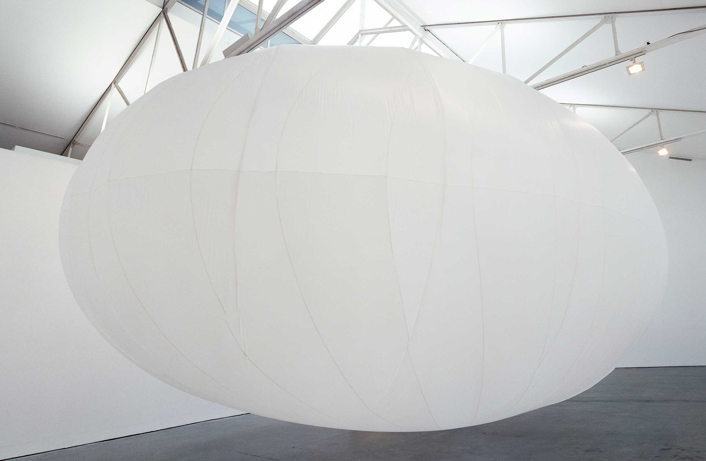
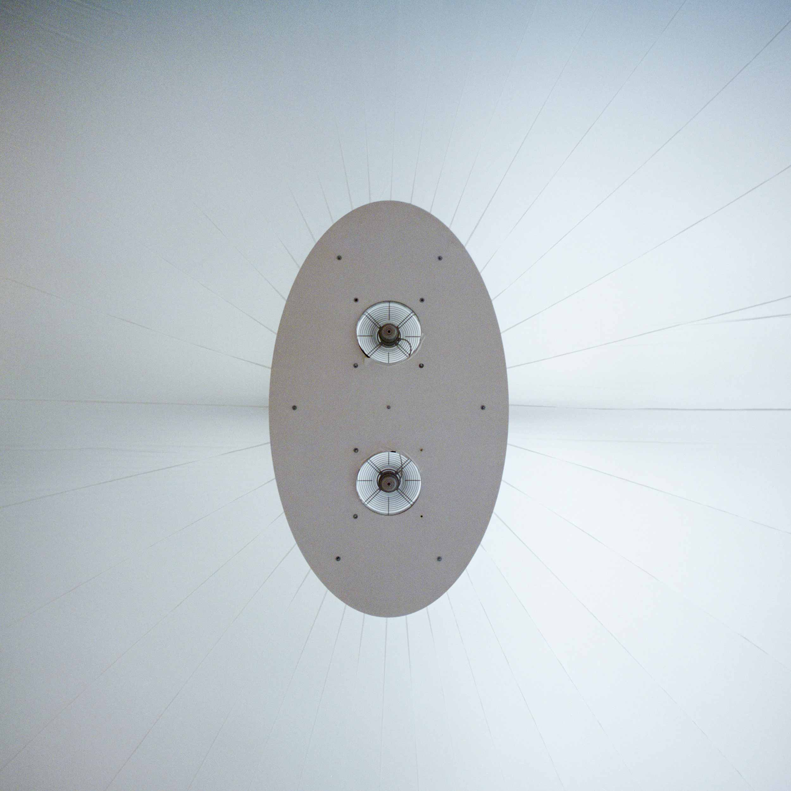
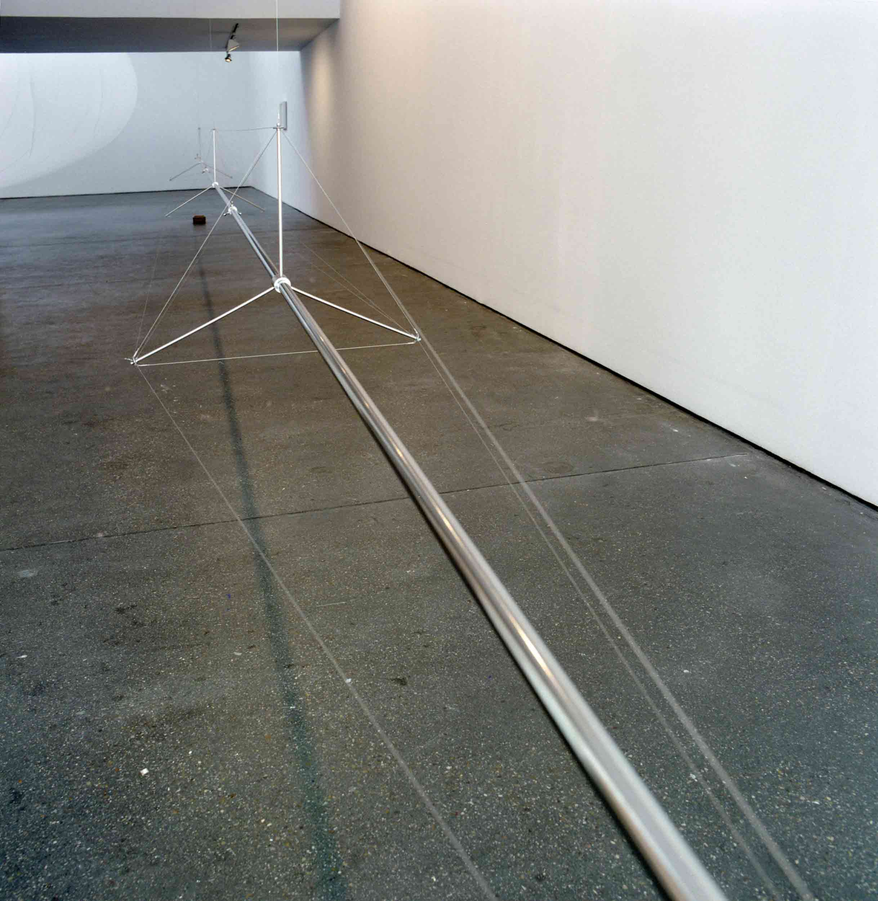
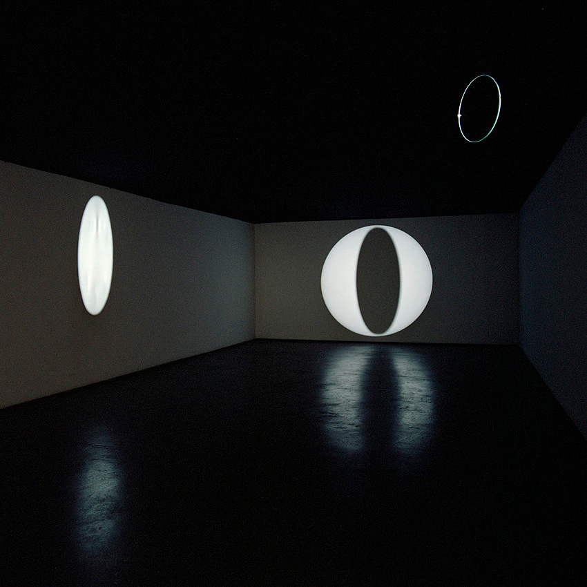

Madrid
2007
The solo show at Galerie Salvador Diaz consisted of three new installations and a new graphic print series.
Nube Neumática
A large pneumatic installation, Nube Neumática, filled up the main exhibition room. A large white inflated "cloud" made of thin and light nylon fabric was hanging from the gallerys glass roof structures, letting day light filter trough. Two fans above the installation was generating air pressure that kept the balloon in its shape. A timer system cut the fan off at intervals during which time it loosed some of its volume.This slow "breathing" was raising and lowering the installation from the floor. The work was dealing with tension and changing relationship between container - rectangular solid space - and content - an elliptical three dimensional shape floating inside it.


Slide Pipe
The entrance space of the gallery was housing a long and and light structural installation, Slide Pipe, suspended from the ceiling with thin cables. The "spine" of the work, a 12 meters long stainless steel tube, was kept linear with a tension structure created by shrouds and spreaders. The tube was not quite horizontal, one end of it was some centimeters lower than the other. The audience was able to put steel balls roll slowly through the long pipe, which made the whole structure vibrate and create a special sound. The simple interactive work dealt with structural logic, resonation and elapse of time.

Eclipse
The third installation "Eclipse" was dealing with light and reflections and was built in the upstairs room. It consisted of a round dvd-projection resembling "Moon" and a round mirror suspended from the ceiling in front of the beam. The slowly rotating mirror casted a changing shadow on the projection and a moving light reflection on the surrounding walls. In a way the installation created its own simplified "lunar eclipse" to the room.

Lines and Circles
A series of 5 silk prints (1,2 x 1,2m) were hanging on the empty wall of the entrance space. The series was studying the formation of moiré patterns in straight lines and circle shapes.